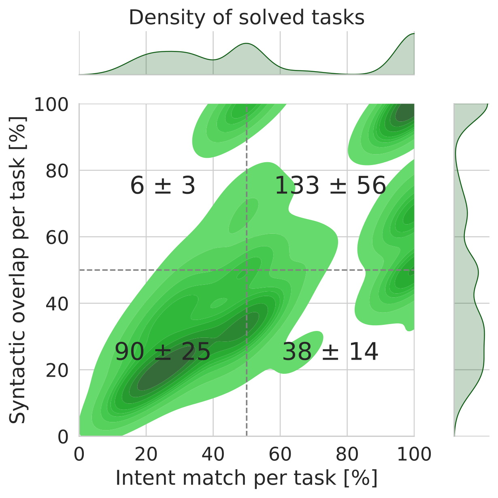
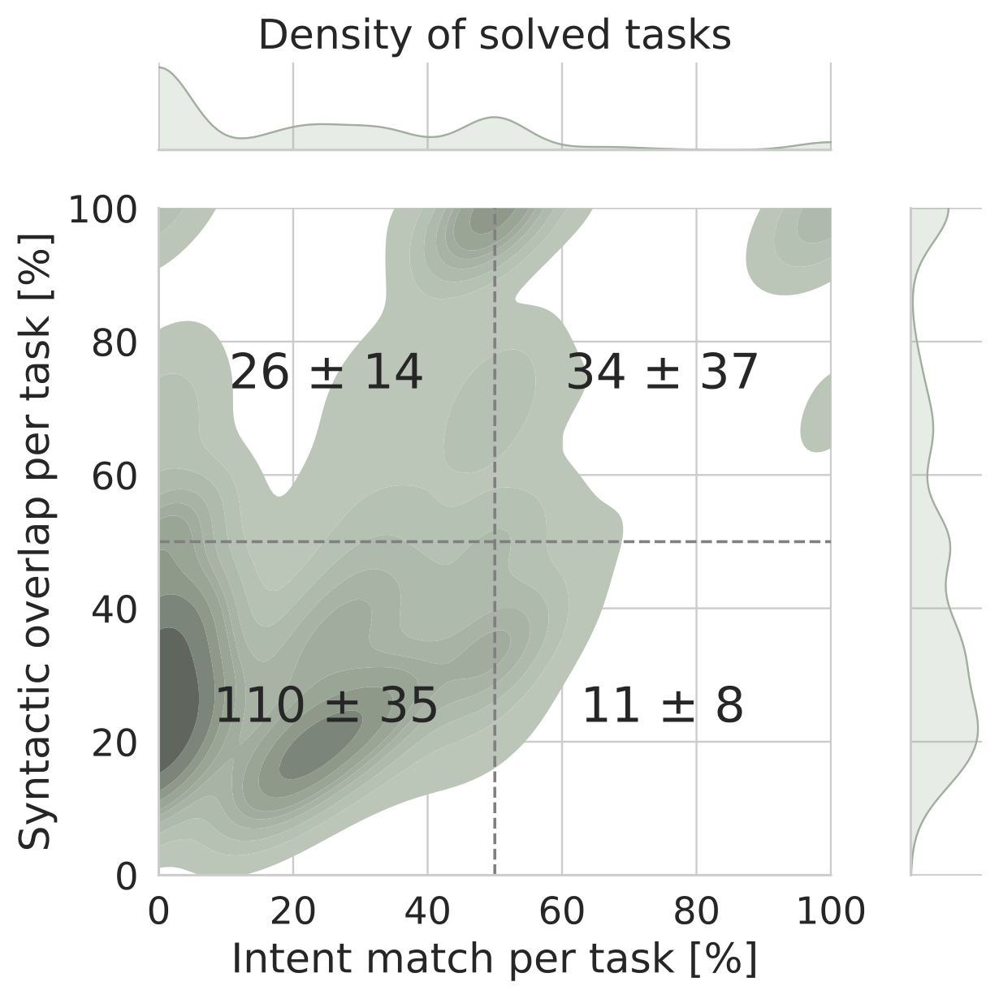

Clausthal University of Technology, Clausthal-Zellerfeld, Germany
Programming-by-example (PBE) has long been approached through one of two lenses. The inductive approach searches over a symbolic program space to find a reusable program consistent with the provided input-output examples. The transductive approach treats the examples as context and predicts missing outputs directly, without ever constructing a program artifact.
Both paradigms succeed — but they fail on systematically different tasks. Induction excels at compositional, logically precise transformations; transduction excels at fluid pattern-matching where explicit rule construction stalls. This complementarity holds not just across tasks, but at the level of individual reasoning steps within the same solution trajectory.
Current hybrid approaches — such as ExeDec — use transductive predictions to pre-determine the full solution trajectory. The inductive synthesizer is then constrained to reach each transductively fixed next state, retaining only local search autonomy. When a transductive prediction is wrong, the error propagates irrecoverably: induction cannot deviate to find a globally consistent solution, even if one exists.
We propose cooperative transductive-inductive problem solving: both paradigms interleave dynamically along the trajectory, with neither unconditionally controlling it. Each transductive prediction acts only as a search horizon reset, not a blueprint the inductive solver is forced to follow.
A formal definition of cooperative transductive-inductive problem solving, with three necessary criteria (Dual Agency, Interleaved Granularity, Search Autonomy Preservation) that distinguish genuine cooperation from ensemble and subordination approaches. The framework is paradigm-agnostic and applies to any system where symbolic and neural reasoners share a state space.
Transductively Informed Inductive Program Synthesis, which uses transduction as a search horizon reset rather than a trajectory blueprint. The incremental intervention schedule recovers the inductive baseline at j = 0 and ExeDec at j = J, isolating all performance gains to the cooperative regime 0 < j < J.
Empirical evidence that TIIPS solves tasks unreachable by any ensemble of ExeDec and the inductive baseline — directly validating Search Autonomy Preservation and ruling out both the prefix-of-ExeDec and ensemble explanations for TIIPS's gains.
TIIPS not only solves more tasks but more frequently recovers the intended program — higher intent match and syntactic overlap with ground truth. Cooperative solvers are not just more powerful than their components; they are more reliably correct.
We formalize problem solving as navigation through a state space S. At every state st, a solver can take an inductive transition — synthesizing a symbolic program fragment — or a transductive transition — using a neural model to leap directly to the next state. An approach qualifies as cooperative if and only if it satisfies three criteria:
Both paradigms function as active problem-solvers. Neither exists solely to constrain, sketch, or pre-process the output of the other. This rules out approaches where induction serves only as a data-augmentation step, or where transduction is merely a feature extractor.
The system permits switching between paradigms at the level of individual reasoning steps — not only at task initialization or termination. This rules out ensemble approaches, where the two paradigms run in parallel and never interact within a single solution trajectory.
After a transductive transition, the new state becomes a fresh search root from which either solver explores the full program space, unconstrained by further consistency requirements. Each transductive step is a search horizon reset — bypassing a syntactic bottleneck without irrevocably pruning the paths that follow.
Any system satisfying these three criteria qualifies as cooperative, regardless of how switching is scheduled or which models instantiate them. The framework is paradigm-agnostic — its implications extend beyond PBE to any setting where bounded symbolic and neural reasoners operate over a shared state space.
TIIPS is a proof-of-concept instantiation of the cooperative framework that maintains interpretability by preserving the terminal objective of producing an explicit symbolic program. It pairs an inductive synthesizer fsyn with a transductive guide fgui, both implemented as Transformer encoder-decoders. The key mechanism is an incremental intervention schedule: for increasing numbers of guided prefix steps j = 0 … J, the transductive guide sets the subtask target for the first j steps while fsyn reasons freely over the remaining steps — each guided state acting as a new search root, not a fixed constraint. For full algorithmic and architectural details, see the paper.
In ExeDec, fgui pre-determines the full trajectory before synthesis begins. In TIIPS, each call to fgui influences only the immediate next subtask. Once the inductive synthesizer reaches that state, it explores the full program space from there with no further prescription. The transductive prediction is a springboard, not a cage. j = 0 recovers the pure inductive baseline; j = J recovers ExeDec — all gains come from the cooperative regime in between.
Domains are chosen to vary the structural property that matters most for cooperative reasoning: the degree of decomposition ambiguity, and the reliability of transductive guidance. All models share identical architectures and weights across conditions; the only variable is the interaction paradigm.
String transformations with a DSL covering substring extraction and modification. Decomposition order is structurally fixed — each task has a single canonical solution trace. Designed to produce convergence between TIIPS and ExeDec, validating the cooperative framework's prediction.
Integer list transformations via first- and higher-order functions (Map, Filter, Scanl1…). Multiple valid programs and decompositions exist per task, giving cooperative reasoning room to outperform subordination.
Extends DeepCoder with dynamically constructed lambda functions and a conditional If operation. Branching paths amplify the cost of a single wrong transductive prediction — and correspondingly amplify cooperative gains.
5 random seeds · 1,000 test tasks per seed and category · beam size 10 · leave-one-out (LOO) protocol · 5 compositional generalisation categories: in-distribution, length generalisation, compose different concepts, switch concept order, compose new operation, add operation functionality. TIIPS and ExeDec make identical total model calls per task. Architecture: Transformer, embedding dim 512, hidden dim 1024, 3 layers, 4 attention heads. Training: single RTX A6000, ~1 day per category.
TIIPS consistently outperforms both the inductive baseline and ExeDec across DeepCoder and LambdaBeam, in all five compositional generalisation categories. All TIIPS vs. ExeDec differences are statistically significant (paired t-test, p < 0.05). In RobustFill — a single-trace domain with structurally fixed decomposition order — TIIPS and ExeDec converge, exactly as the cooperative framework predicts.
TIIPS solves a substantial set of tasks that are unreachable by either baseline individually or in combination — ruling out both the ensemble and prefix-of-ExeDec explanations. The Venn diagrams below show the overlap of solved tasks (DeepCoder left, LambdaBeam right).
Beyond accuracy, TIIPS solutions concentrate in the high intent match / high syntactic overlap quadrant — matching the intended program behavior, not just the training examples. ExeDec solutions spread across lower quadrants: a fingerprint of the subordination failure mode, where a slightly off-target transductive prediction forces the synthesizer to produce convoluted programs that satisfy the examples but deviate from the canonical transformation.


Accepted at ECML PKDD 2026, Naples. Please cite the conference version when available.